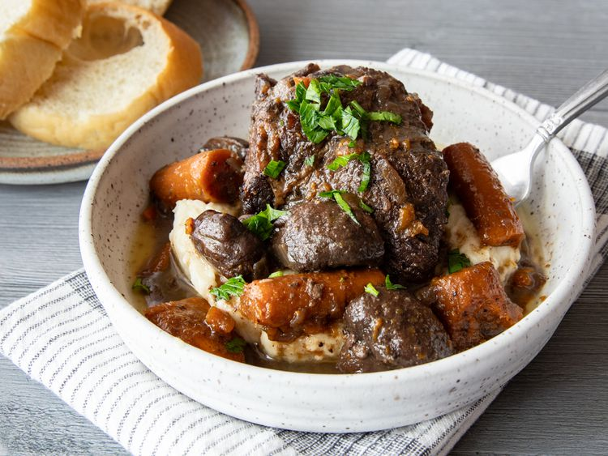

Odin Recipes
Braised Beef

Braised Beef
An elevated version of homestyle pot roast, this braised beef is hearty and full of earthy richness. It would pair well with mashed potatoes, buttery noodles, or crusty bread.
Ingredients
- 1 medium onion, chopped
- 2 tablespoons butter
- 1 cupt red wine
Steps
- Gather all ingredients and preheat the oven to 350 degrees F (175 degrees C).
- Season beef pieces evenly on all sides with 3 1/2 teaspoons salt, 2 teaspoons pepper, and garlic powder.
- Heat oil in a large skillet over high heat. Add beef, reduce heat to medium high and cook, undisturbed until it releases easily from the skillet and a golden brown crust has formed, about 4 minutes. Flip pieces and continue to cook until browned on all sides. Remove meat from the pan and set aside.